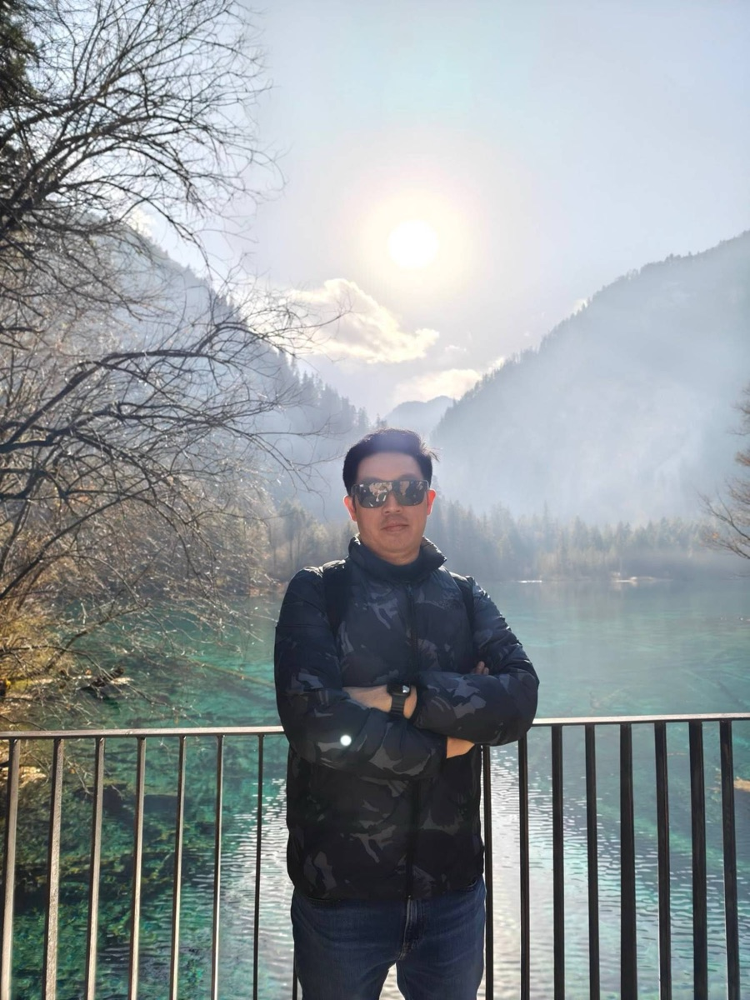

2023
Education Sciences, 13(1), 64 — Kingkaew, Theeramunkong, Supnithi, Chatpreecha, Morita, et al.
★ 50 CITATIONSอ่านบทความฉบับเต็ม ↗

ดร.ชนกานต์ กิ่งแก้ว หรือที่รู้จักในชื่อ "อ.โอ๊ค" เป็นอาจารย์และนักวิชาการเชี่ยวชาญด้านปัญญาประดิษฐ์และเทคโนโลยีดิจิทัล ปัจจุบันดำรงตำแหน่งหัวหน้าสาขาวิชาเทคโนโลยีดิจิทัลและสารสนเทศ (DIT) ณ คณะวิศวกรรมศาสตร์และเทคโนโลยี สถาบันการจัดการปัญญาภิวัฒน์ (PIM) และเคยดำรงตำแหน่งอาจารย์ประจำสาขาวิศวกรรมคอมพิวเตอร์และปัญญาประดิษฐ์ (CAI)
เชี่ยวชาญด้าน Modern Web & Applied AI การวิเคราะห์ข้อมูลเชิงทำนาย (Predictive Analytics) และวิทยาการความรู้ (Knowledge Science) มีผลงานวิชาการด้านการทำนายข้อมูลขนาดใหญ่ในภาคธุรกิจ และเป็นผู้ขับเคลื่อนหลักสูตร DIT และ CAI ที่เน้นการประยุกต์ใช้ปัญญาประดิษฐ์กับระบบเว็บสมัยใหม่ เพื่อสร้างบัณฑิตที่พร้อมทำงานจริง
การประยุกต์ใช้ปัญญาประดิษฐ์กับระบบเว็บสมัยใหม่ ตั้งแต่การออกแบบสถาปัตยกรรมไปจนถึงการใช้งานจริงในภาคธุรกิจ
การวิเคราะห์ข้อมูลเชิงทำนายและข้อมูลขนาดใหญ่ เพื่อสนับสนุนการตัดสินใจทางธุรกิจ
การออกแบบสภาพแวดล้อมการเรียนรู้ การเรียนรู้จากประสบการณ์ การกำกับตนเองในการเรียนรู้ และเมตาคอกนิชัน
ขับเคลื่อนหลักสูตร DIT และ CAI ด้วยแนวทาง Work-based Education สร้างบัณฑิตที่พร้อมทำงานจริง
รวมถึงบทความภาษาไทยในวารสารปัญญาภิวัฒน์ (Panyapiwat Journal) ด้านการวิเคราะห์ข้อมูลเชิงทำนายและระบบติดตามการฝึกงาน — ดูผลงานทั้งหมดบน Google Scholar ↗
อบรมและให้คำปรึกษาการพัฒนาเว็บแอปพลิเคชันครบวงจร ตั้งแต่ front-end ถึง back-end
บรรยายและอบรมการประยุกต์ใช้ Generative AI ในการทำงานและภาคธุรกิจ
อบรมการเขียนโปรแกรมยุคใหม่ด้วย AI Coding Agent เพิ่มประสิทธิภาพการพัฒนาซอฟต์แวร์
ให้คำปรึกษาการวิเคราะห์และออกแบบระบบสารสนเทศสำหรับองค์กร
อบรมและให้คำปรึกษาด้านวิศวกรรมข้อมูล การจัดการข้อมูลขนาดใหญ่ และ data pipeline
บันทึกเรื่องราวและมุมมองระหว่างทางผ่านเลนส์ — ติดตามผลงานภาพถ่ายได้ที่ Instagram @oakabc ↗
ออกเดินทางเก็บแรงบันดาลใจจากที่ใหม่ ๆ ทั่วโลก — ภาพด้านบนก็มาจากทริปจริง
ยินดีพูดคุยทั้งเรื่องงานวิจัย การบรรยาย อบรม และความร่วมมือกับภาคการศึกษาหรือภาคธุรกิจ